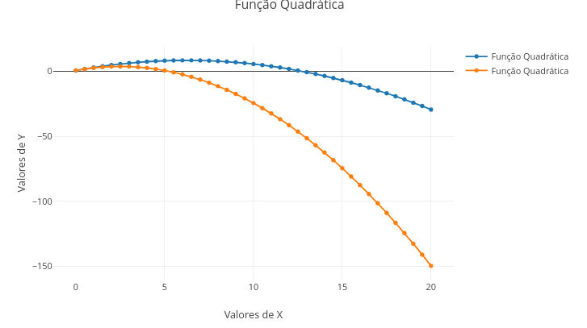

1. Passar o mouse sobre os pontos do gráfico ("mouse over" ou "hover");
2. Desenhar um retângulo em qualquer área para ampliação ("zoom"); retorna-se ao tamanho original com um duplo clique;
3. Usar o "zoom" com o botão de rolagem do mouse;
4. Escrever qualquer coisa nos rótulos do gráfico, como o título, a etiqueta do eixo das abscissas (eixo "X"), e das ordenadas (eixo "Y");
5. Deslocar o gráfico na horizontal/vertical, posicionando o mouse próximo dos algarismos de cada eixo, clicando-se com o botão esquerdo, e arrastando-o ("pan");Interatividade com JSPlotly
Interatividade por mouse, touchpad, ou tela capacitiva
Há diversas formas de interagir com o aplicativo e os objetos gerados por esse, grande parte mediada por mouse em desktop/notebook, por telas capacitivas de smartphones. Ilustrando para uso do mouse, voltemos ao exemplo da parábola abaixo. Depois de clicar no botão add, experimente:
Botões da barra de modos
Além dessa interatividade básica, o JSPlotly permite várias outras, como a promovida pelos botões da barra de modos (modeBar) logo acima do gráfico, e identificada pelos ícones a seguir:

Da direita para a esquerda os ícones permitem:
1. Inserir um texto próximo de um dado do gráfico, e indicado por uma seta;
2. Trocar a cor do traço do gráfico;
3. Salvar o gráfico como PNG (imagem rasterizada, bom pra web) ou SVG (imagem vetorial, mais precisa);
4. Indicar as coordenadas "x" e "y" de cada ponto no gráfico por linha tracejada;
5. Autoescalonar o gráfico;
6. Inserir um círculo;
7. Inserir um quadrado;
8. Desenhar à mão livre;
9. Desenhar uma reta;
10. Deslocar o gráfico na área por "span";
11. Aplicar um "zoom";
12. Direcionar o gráfico pra edição detalhada por cliques de mouse no site do desenvolvedor, "Chart Studio" (https://chart-studio.plotly.com/create/)Botões do editor de códigos
Agora uma explicação sobre os botões abaixo do editor de códigos. São 7 botões, para simplificar o carregamento, cópia e compartilhamento, tanto do gráfico interativo, como do código que se encontra no editor, como também para ambos. E até mesmo para o aplicativo em si, personalizado para um determinado código.
O quadro a seguir mostra o que faz cada botão, com detalhes de uso explicado logo em seguida. Mais uma vez, vamos usar a boa e velha parábola como exemplo pra você experimentar a funcionalidade de cada botão.
Ah, sim ! Relembrando, os botões sempre aparecem abaixo do editor de códigos. Mas a disposição do JSPlotly pode variar entre equipamentos. Exemplificando, os botões podem aparecer espalhados abaixo do editor que fica à direita do gráfico, ou empilhados embaixo do editor, por sua vez abaixo do gráfico. Isso depende de qual equipamento você está utilizando para o JSPlotly, se um desktop de mesa, notebook, tablet ou smartphone, e mesmo o nível de zoom da tela do navegador.
Quer testar essa disposição num mesmo dispositivo ? Basta clicar no botão central superior que esconde/mostra a barra lateral. E se estiver usando um celular, Experimente !
# Botões de funcionalidades do JSPlotly:
- "add": adiciona um objeto na área gráfica a partir do código contido no
editor;
- "remove": apaga o último traço de um gráfico/objeto;
- "clean": limpa a área gráfica;
- "delete": limpa o editor de códigos;
- "script": salva o código em formato de texto;
- "html": salva o objeto como arquivo HTML, preservando sua interatividade;
- "clone": copia o código em sua última edição juntamente com próprio JSPlotly
E dá-lhe a parábola pra você testar os botões do editor….
Botão add
O botão add é o principal do editor. Com ele você adiciona o código no interpretador de JavaScript do navegador, possibilitando a construção do gráfico (ou de outro objeto interativo, como veremos adiante). Agora, o botão add possui outra função bem bacana, e que você pode experimentar nesse momento com 2 cliques:
- Clique no add do editor para adicionar a parábola;
- Apague o sinal de “-” que está logo acima no código, na variável “const a = -0.2”;
- Clique novamente no botão add.
Tchan, tchan, tchaaan !!! Veja que agora o gráfico “(add)icionou” mais um traço ao gráfico original. E ainda por cima com cor diferente e legenda !!

E para dar um jeitão mais bacana ao gráfico, dá-lhe outra funcionalidade interativa: a legenda. Veja que você pode clicar e arrastar a legenda para outra parte do gráfico. Além disso, também pode mudar o texto legenda, já que o gráfico sobreposto possui o mesmo título do anterior. Exemplificando:
- Clique no texto em azul na legenda e digite “a = - 0,2”;
- Agora clique no texto em laranja e digite “a = 0,2”
Pronto, agora você tem um gráfico mais “limpinho” na legenda, como no debaixo.

Essa possibilidade com o botão add para adicionar traços é particularmente interessante quando se deseja comparar um gráfico (ou objeto) com outro, para se verificar o que mudou na área gráfica com a alteração do código. Ou seja, isso é muito bom pra explorar parâmetros de uma equação, por exemplo, com vistas a compreender melhor como essa equação funciona quando colocada na forma de um gráfico. O nome chique pra isso é exploração ou manipulação paramétrica. Em resumo, elabora-se um gráfico e o sobrepõe com um ou mais gráficos alterando-se um ou mais parâmetros da equação. No caso de um objeto diferente de um gráfico, a exploração dá-se com mudança de outros detalhes do código (com cores, por exemplo).
Botão remove
Tá em inglês, mas poderia tranquilamente ser compreendido em língua pátria, mesmo. Esse botao remove o último traço adicionado na área gráfica. Sua utilidade é também importante, pois permite que se retire de um gráfico um ou mais traços que não ficaram do jeito que se desejava. Exemplificando, digamos que para a parábola do exemplo acima o legal seria comparar o efeito da constante “a” com um valor que não fosse somente pela retirada do sinal negativo. A figura abaixo ilustra como ficaria o gráfico se você “(remove)”esse esse traço e adicionasse outro, com valor diferente para a constante.



Botões clean e delete
Esses botões servem para limpeza. O botão clean atua limpando a área gráfica. Pode ser que às vezes “sobre” alguns elementos de interatividade de um gráfico anterior, como uma barra deslizante, por exemplo. Nesse caso, o melhor é recarregar a tela do navegador (Ctrl+F5 ou Ctrl+R, dependendo do browser, ou um botão à esquerda de sua barra de endereços).
Já o botão delete limpa o editor de códigos, o que pode ser útil quando se deseja colar aí um novo código, por exemplos.
Botão script
Esse botão permite que você salve o código para recuperá-lo futuramente, para editá-lo num outro momento, ou para compartilhá-lo com alguém. Ele é salvo com o atributo js indicando tratar-se de um código em JavaScript para carregamento no JSPlotly pelo botão browser. Mas você pode personalizar o nome, e abri-lo em qualquer editor de texto, mesmo num simples bloco de notas.
O botão é particularmente útil quando se deseja compartilhar o código, e mesmo guardá-lo para um uso futuro, para montar uma biblioteca e códigos, ou para instruir um assistente de IA generativa para incrementar o código, ou produzir um código semelhante.
Botão html
Esse botão é o “mais charmoso”. O html permite que você salve o gráfico ou qualquer outro objeto interativo num arquivo HTML, por óbvio. Mas o “chique da coisa” é que o arquivo é autossuficiente (self-contained). Na prática isso quer dizer que ele guarda toda a interatividade contida no objeto interativo original, incluindo ações de mouse/dedo, animações, sonorização, e widgets.
Assim, você pode rodar um código e, apreciado o objeto que resulta desse, salvá-lo numa mídia física para uso pessoal, estudo futuro, armazenamento simples, como também para distribui-lo a quem desejar, incluindo o seu compartilhamento por redes sociais ! Que tal experimentar isso agora ?!
Com a boa velha parábola (código padrão que vem com o JSPlotly) do aplicativo vivo abaixo:
- Clique em add para adicionar o gráfico, como já fez antes;
- Passe o mouse na área gráfica (ou os dedos no touchpad do notebook, ou na tela capacitiva do celular), e clique em algum ícone da barra de modos (o de câmera, por exemplo, pra mudar a cor do traço);
- Clique em html e salve o arquivo no dispositivo (notebook, celular, etc).
- Abra o arquivo salvo e veja que ele retém toda a interatividade do objeto, incluindo a personalização realizada (cor do traço, por ex);
Botão clone
Esse botão possui a função apresentada no próprio nome, ou seja, ele “clona” o JSPlotly com um código específico, já customizado ou não. Isso é particularmente útil quando se quer não apenas guardar/compartilhar um código (botão script) ou um objeto interativo (botão html), mas sim quando se deseja guardar/compartilhar o aplicativo inteiro com o código padrão escolhido.
Dessa forma, o botão clone agrega um valor a mais, já que possibilita avaliar um objeto de aprendizagem interativo juntamente com seu código, facultando a edição desse para personalização do objeto. Ilustrando seu uso prático, quando se deseja guardar/compartilhar um objeto e seu código para aprimoramento, por exemplo.